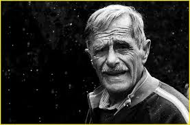
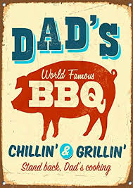

Our company was founded in the 1950s and it become a quick success. Although it was founded by our grandfather, it became a family company that has made a huge impact on our entire lives. Because this was the first BBQ company in the state, everyone wanted to try it out and it has been popular since then. I mean, who doesn't want to eat our barbeque?

Our grandfather spent numerous hours planning how this would be achieved, such as creating recipes, branching networks out, and effectively making all of the food before our entire family took over the business. He gets all the crdit for starting and we get the rest for carrying on the tradition. He wanted to revolutionize on how BBQ woud not only taste but how it was uniquely made. Around 1954 our grandfather final had created a recipe that was unique to other BBQ sauce and was finialy satisfied with his own prouduct. After countless years of trying Dads BBq was finally made and put into action.

Without the countless hours our grandfather had put in we would not be able to have this company today. With all our countless help he was able to spread his love of cooking homestlye BBQ with us and the people of this country. Our goal is to share the same dream our grandfather had and contuine making a phenomenal BBQ sauce that can still be used generation to generation, and still make a qualtiy product that people will still contuine to love in there homes and in resturaunts. We will carry this tradition and lifestyle on forever.